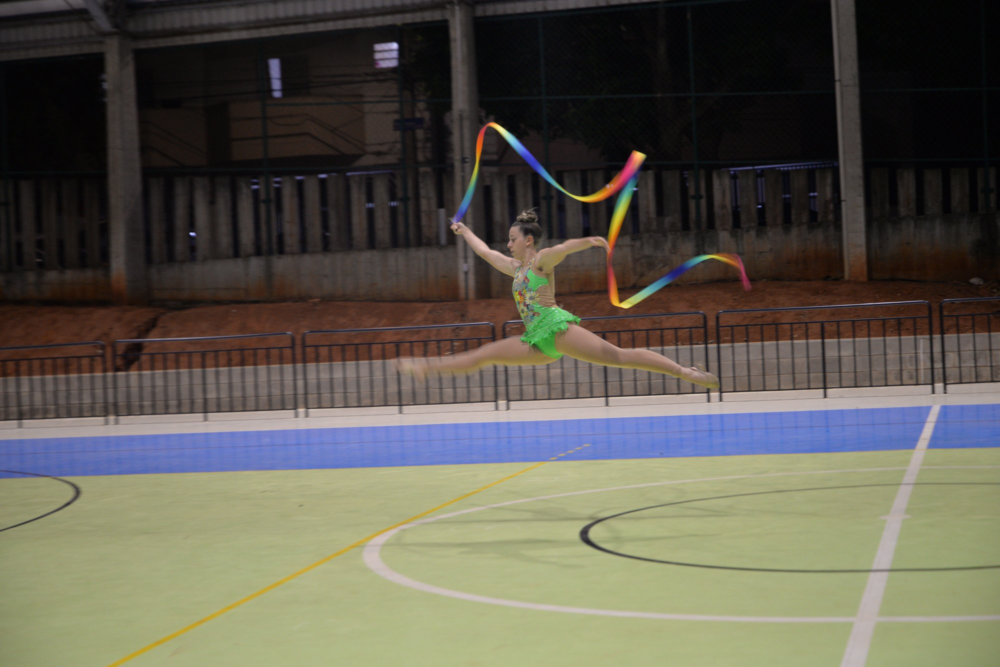
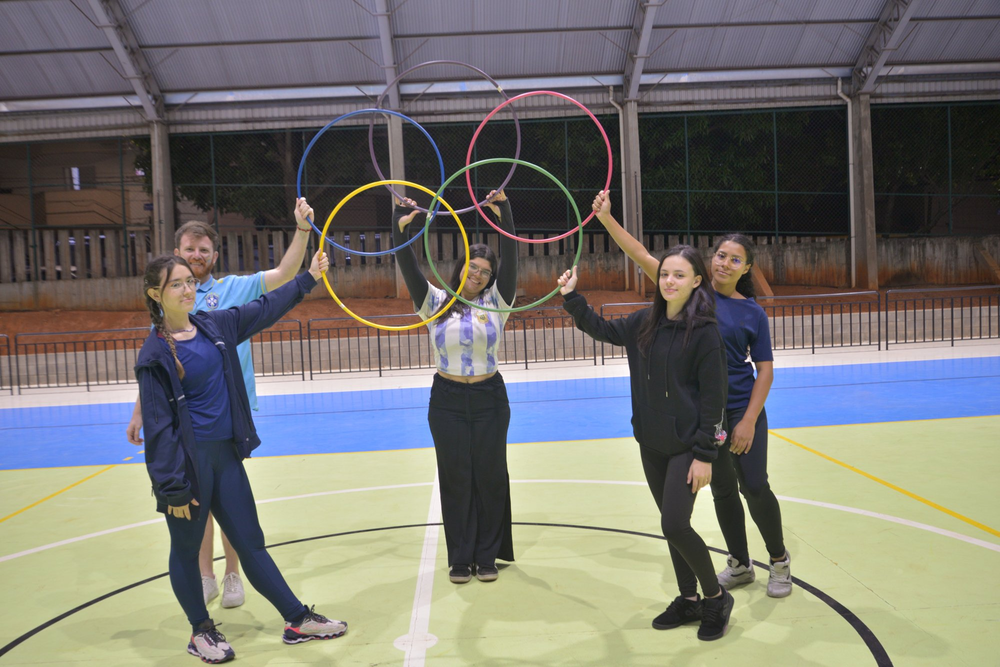

Relatório Institucional

1.1 Parceria com a Atlética
Objetivo: Proin vestibulum vitae magna a tristique. Praesent sit amet arcu a ante euismod sagittis. Mauris eget viverra ipsum, sed blandit.
Público atendido: Discentes.
Procedimento: Aenean quis felis quis metus ultricies maximus. Etiam sed lorem felis. Quisque congue urna vel felis luctus dapibus a non.

